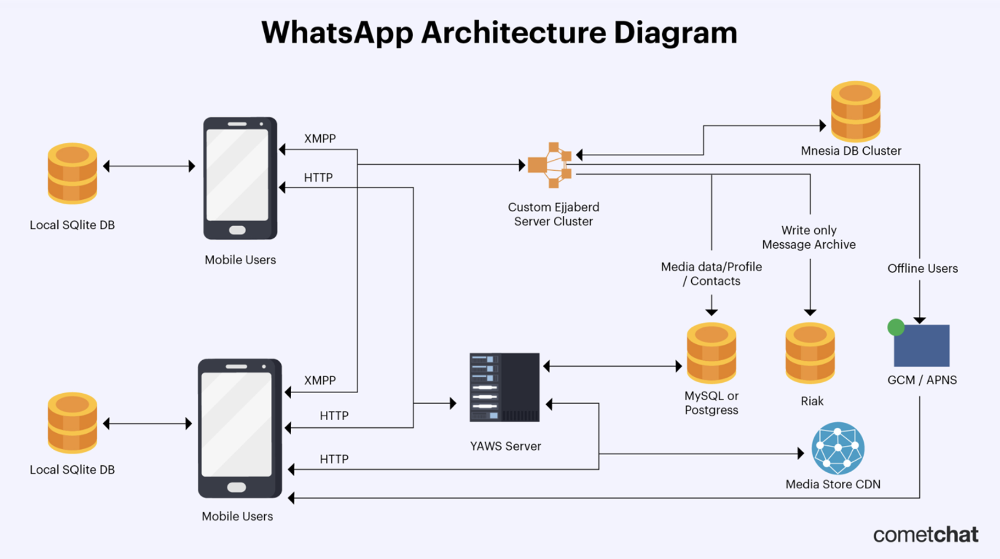
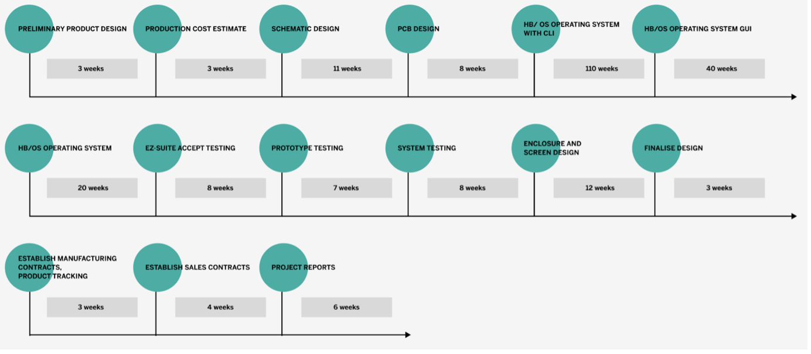

Features
Risk of Digitalization
What do the authors mean by the term ‘Industry 4.0’ – give two examples
Industry 4.0 refers to the 4th industrial revolution, which comprises of a fast-changing digital environment. The digitalization process is unpredictable, where systems are vulnerable. Thus, the current era of technology is impacting the way in which businesses operate. For instance, business models have become more complicated as technology has advanced (Kovaite and Stankeviciene, 2019).
learn more
Find another journal article that either supports or contradicts the points made in the citied study
Competence risks involves the need for human resources, where people have the necessary skills to help mitigate risks. There is a scarcity of IT professionals specializing in security. IT professionals play a huge role in managing threats as there is a growing number of cyber-attacks in our digital age. Additionally, data security risks revolve around the protection of data and managing access. For instance, in 2019, two of Facebooks databases become publicly visible, such as private phone numbers (Swill and Swinhoe, 2022).
Find another journal article that either supports or contradicts the points made in the citied study
According to Dr. Bouchrika, a data scientist, the fourth industrial revolution “represents a turning point in wide range technological advancement in industries.” This has resulted in a disruption in traditional approaches to managing risks in digitalization. On the one hand, development of new business models has improved engagement and collaboration amongst people. However, these advancements in technology have made systems more susceptible to cyber-attacks.
References
Bouchrika, I. (2023) What is the Fourth Industrial Revolution: Risks, Benefits & Responses, Research.com. Available at: https://research.com/careers/what-is-the-fourth-industrial-revolution (Accessed: 14 August 2023).
Hill, M. and Swinhoe, D. (2022) The 15 biggest data breaches of the 21st Century, CSO Online. Available at: https://www.csoonline.com/article/534628/the-biggest-data-breaches-of-the-21st-century.html (Accessed: 14 August 2023).
Kovaitė, K. & Stankevičienė, J. (2019) Risks of digitalisation of business models. Proceedings of 6th International Scientific Conference Contemporary Issues in Business, Management and Economics Engineering 2019. DOI: 10.3846/cibmee.2019.039.
Seminar One: The Gherkin Language
Using a new coffee making machine
Scenario: Making a coffee
Given I have read the instructions
And set up the new coffee machine
And turned it on to ensure there is power
And I have added both the coffee beans and fresh water
When I select the button and choose what coffee I want to make
Then the new coffee machine starts making my coffee
And the coffee is dispensed into my cup
learn more
Scenario: Coffee machine is broken
Given the new coffee machine cannot brew coffee
And it is turned in
and has water in the dispenser
When I try to make a coffee
Then the new coffee machine makes a sound
And no coffee is dispensed
Scenario: Coffee machine is leaking water
Given the new coffee machine is malfunctioning
And it is plugged in
And both water and coffee beans have been added
When I push the button to make a coffee
Then waters leaks out from the bottom of the machine
Data Structures Reflection
How a system operates at the backend using data structures
Data structures are central to the Computer Science field. I decided to look at the everyday online system, WhatsApp. WhatsApp backend operates using numerous different data structures to handle the huge amount of data associated with the application. It is a messaging platform that allows users to send and receive messages.
learn more
WhatsApp architecture is broken up into two primary components, the backend and frontend. The front end focuses on user engagement and the routing of messages. On the other hand, the back end focuses on how user data is stored. WhatsApp back end system main programming language is Erlang (Cressler, 2021).
Based on the above diagram, we can see that a local SQLite database is used to store conversations. The clients utilize “HTTP WebSockets to send and retrieve multimedia data like images and videos from the YAWS web server” (Cressler, 2021). Then, XMPP is utilized to transmit messages to other users. The messaged is then saved and queued in the form of a Mnesia database table. Finally, the message is routed from the queue via the Ejabberd server and is delivered to the recipient.
References
Cressler, C. (2021) Understanding Whatsapp’s Architecture & System Design, RSS. Available at: https://www.cometchat.com/blog/whatsapps-architecture-and-system-design (Accessed: 15 June 2023).
Dicheva, D. and Hodge, A. (2018) ‘Active learning through game play in a Data Structures course’, Proceedings of the 49th ACM Technical Symposium on Computer Science Education [Preprint]. doi:10.1145/3159450.3159605.
Semninar Two: Risks and risk mitigation
Activity Two: Read the articles by Verner et al (2014) and Anton & Nucu (2020) and then answer the following questions:
What are the main risks that the authors identify?
The complexity of software development projects are seen as a risk. For instance, offshore projects may fail as a result of “physical, time, cultural and organisational and stakeholder distances negatively influence communication and knowledge exchange between onshore and offshore project team members” (Verner et al., 2013). For instance, projects are at risk of being unsuccessful due to language barriers or time zone differences.
learn more
According to the Journal of Risk and Financial Management, the factors contributing towards enterprise risk management are as follows, “firm size, financial leverage, book to market ratio, merger and acquisition activities, return of assets, capital opacity, earnings volatility, financial slack, managerial career, business diversification, industry, big four auditor, big three rating, industry competition, monitoring by the board of directors, ownership structure” (Anton & Nucu, 2020). Both authors have highlighted business diversification as a risk, where offshore projects may result in agency problems.
Which of the frameworks discussed in the Unit 3 lecture cast would you use to capture and categorise the risks?
I would adopt the expert judgment-based estimation approach. This is because it is “the most common used approaches by the software industry today” (Jorgensen, Shepperd, 2007). This framework involves an evaluation process with the development team. This is done by analysing previous projects and creating estimates from there. Taking into account why previous projects have failed, a the team are able to adopt this framework to mitigate future risks. Additionally, a project manager can categorise these risks by using the Risk Management Process, which involves a planning phase, a do phase and the act phase.
▲Codio Activity: Pytest
The following task involves experimenting with pytest using the Python programming language.
learn more
Copy the following code into a file named wallet.py:
# code source: https://semaphoreci.com/community/tutorials/testing-python-applications-with-pytest
# wallet.py
class InsufficientAmount(Exception):
pass
class Wallet(object):
def __init__(self, initial_amount=0):
self.balance = initial_amount
def spend_cash(self, amount):
if self.balance < amount:
raise InsufficientAmount('Not enough available to spend {}'.format(amount))
self.balance -= amount
def add_cash(self, amount):
self.balance += amount
Copy the following code into a file named test_wallet.py:
# code source: https://semaphoreci.com/community/tutorials/testing-python-applications-with-pytest
# test_wallet.py
import pytest
from wallet import Wallet, InsufficientAmount
def test_default_initial_amount():
wallet = Wallet()
assert wallet.balance == 0
def test_setting_initial_amount():
wallet = Wallet(100)
assert wallet.balance == 100
def test_wallet_add_cash():
wallet = Wallet(10)
wallet.add_cash(90)
assert wallet.balance == 100
def test_wallet_spend_cash():
wallet = Wallet(20)
wallet.spend_cash(10)
assert wallet.balance == 10
def test_wallet_spend_cash_raises_exception_on_insufficient_amount():
wallet = Wallet()
with pytest.raises(InsufficientAmount):
wallet.spend_cash(100)
Run the tests using the command: $ pytest -q test_wallet.py
Amend the code so that the tests fail.
▲
E-portfolio activity
As a Project Manager, what might be your response to manage the emotional reactions of a customer? You should use at least three academic papers to support your response and write a minimum of 300 words as your response.
Emotions are a driving factor of human experience. When we consider the interaction between humans and computers, the same applies. Seeing that emotions are a very complex phenomenon, it is important to make use of emotional measurement tools (Agarwal and Meyer, 2009). Emotional measurement tools, such as t-test can be deployed to understand usability of software.
learn more
There are many challenges with understanding customer demands and ensuring they have the best user experience. A project managers role is to ensure their team has access to toolkits to make sure their product is user friendly, without inhibiting innovation. These tools can be determined based on a hedonic and utilitarian experience. A hedonic experience is based on the “interactions with virtual environments related to mental stimulation, pleasure and enjoyment” (Fuller et al., 2016). On the other hand, a utilitarian experience is “related to cognitive and instrumental benefits that customers gain” (Fuller et al., 2016).
It is essential that user testing is conducted in order to achieve the intended user experience. If the platform is able to achieve its intended purpose, it will be successful. Thus, it is vital that a project manager ensures that a researcher conducts thorough user tests to highlight ease of use and pain points for users. During this process, it is important that you make sure the user feels comfortable and safe during the test. Additionally, empathy plays a huge role in creating great usability. This is because if you can truly understand what a user feels, you can design a better experience.
It is critical that user testing feedback is analysed and solutions are offered. A project manager ensures we learn from our user’s previous and current emotional reactions when engaging with a platform. Overall, as a project manager, trust and transparency create positive user engagement. This is done by is constantly analysing and managing the emotional reactions of customers.
References
Agarwal, A. and Meyer, A. (2009) ‘Beyond usability’, CHI ’09 Extended Abstracts on Human Factors in Computing Systems [Preprint]. doi:10.1145/1520340.1520420.
Cajander, Å., Larusdottir, M. and Geiser, J.L. (2022) ‘UX professionals’ learning and usage of UX methods in Agile’, Information and Software Technology, 151, p. 107005. doi:10.1016/j.infsof.2022.107005.
Dautenhahn, K. (2007) ‘Methodology & themes of human-robot interaction: A growing research field’, International Journal of Advanced Robotic Systems, 4(1), p. 15. doi:10.5772/5702.
E-portfolio activity
Improving Code Quality
According to Mertz, it is important to have clean and readable code. I have chosen to adopt three of Mertz strategies to improve the quality of previous Python code that I had developed.
Firsly, I made use of an IDE tool called Visual Studio code, as it is equipped with a Python extension and encompasses both black.py and Pylint (Mertz, 2019). Secondly, I updated my project layout, so that the main script, images and the readme file are viewed as one off scripts. Finally, I chose to follow the style guide PEP 8, where I adopted 4 spaces per indentation.
Code Quality
References
Mertz, J. (2019) Writing clean and pythonic code, Docslib. Available at: https://docslib.org/doc/9751240/writing-clean-and-pythonic-code (Accessed: 31 June 2023).
E-Portfolio Activity
Reflection on software quality
Software quality refers to the degree with which the product meets requirements. This can be understood in terms of things such as, usability, functionality and efficiency. In order to achieve high quality software, project managers need to follow the software development process, which consists of gathering requirements, design, development, testing and deployment. Additionally, quality assurance can be achieved by employing techniques such as testing and code reviews.
learn more
A timelier in the context of software development refers to the time in which certain tasks/ requirements need to be completed. According to Tank, a software development timeline is based in pre-analysis and data, along with real time business intelligence (Tank, 2015). Using a “real-time business intelligence system” aids in the process of making a decision and deciding on timelines. Real time data is also used to analyse user experience.
According to McCall, Richards and Walters, software quality is consistent with grouping together factors, such as complexity and modularity. Both complexity and modularity focus primarily on software and not user experience. McCall et al., believed that you could not measure understandability. It is evident, that majority of focus was on initial product operations.
The major differences I have identified between the two articles is the importance of user friendliness. Both articles stress the importance of meeting certain criteria and managing timelines, but McCall et al., play little attention to user engagement with the system.
References
Tank, D. (2015) Enable better and timelier decision-making using real-time business , Information Engineering and Electronic Business. Available at: https://mecs-press.net/ijieeb/ijieeb-v7-n1/IJIEEB-V7-N1-6.pdf (Accessed: 20 July 2023).
▲Risk Identification Report
Project Reportlearn more
Pampered Pets are a bricks-and-mortar business, based in a leafy suburb of Hashington-on-the-Water. It employs 4 staff; Alice the owner/ manager; Cathy the shop manager; Andrea the store assistant and Harry the warehouse manager. 90% of their business is carried out face to face, with people coming into the store to buy items. A small percentage of clients will email their orders – once these are ready the staff email the clients who then travel to the store to pick up goods and pay. Recently Harry has started to use an old, networked computer (with a spreadsheet package) to keep track of warehouse deliveries and item locations. The front desk uses a computer for all sales and purchases so that transactions are recorded digitally – this makes VAT and Tax submissions easier. The main shop has a wireless gateway and hub that both computers are connected to. In addition, all the staff use the wireless connection for various apps on their smart phones.
The business is most famous for the quality of its pet foods – using the highest quality ingredients from local suppliers, with many items being prepared and packed in-house. This has a number of advantages including easy and regular quality checks of ingredients and a guaranteed supply chain – if necessary, employees could get into their cars and drive 10 minutes to the suppliers (mostly local farms) to pick up the ingredients by hand.
Cathy, cognisant of the influence and benefits of the Internet, has retained the services of a consultancy (you) to research the best way to grow the business. The report should investigate all reasonable threats AND address the following three questions:
Could an online presence grow the business by up to 50%?
Could changing to an international supply chain reduce costs by up to 24%?
Could the business lose up to 33% of its existing customers if the business doesn’t provide some online features?
Orla O’dour (eccentric Irish billionaire) decides to buy a share in the company and advises Cathy that the business should be digitalised to improve internal business processes and to expand the reach of the business internationally – and she is willing to fund the transformation.
Assessment: A Report by a Security and Risk Management Consultant.
For this submission, you are tasked with carrying out a risk assessment, evaluating the risks of both the effects of the digitalisation process and of the alternative of maintaining the status quo to the business. Which would you recommend, taking both assessments into account? Produce a risk identification report with your responses to these questions. Note that the associated grading criteria are highlighted in the requirements below, to be reviewed alongside the criteria grid (Module Resources).
Checklist:
Carry out a risk assessment of the Pampered Pets business as it stands currently (Knowledge and Understanding weighted at 25%). This should include:
A selection of a risk assessment methodology with justifications for the selection.
A risk and threat modelling exercise that enumerates and evaluates the current threats and risks to the business.
A list of potential mitigations to the identified risks and threats.
Carry out a risk assessment around the potential digitalisation process as applied to the Pampered Pets business (Application and Understanding weighted at 15%, Criticality weighted at 15%). This should include:
A selection of a risk assessment methodology with justifications for the selection.
A list of proposed changes that form the basis of the digitalisation process/ transformation (e.g., e-commerce portal, ERP system, online marketing, blogs, etc. – note you do not have to include ALL these features).
A risk and threat modelling exercise that enumerates and evaluates the potential threats and risks to the business of the proposed changes.
A list of potential mitigations to the identified risks and threats.
Finally, provide a summary of your recommendations for the business. Do you recommend that the digitalisation process be carried out? If so, what would be involved? What approach and timeline would you suggest? (Application and Understanding weighted at 10%, Criticality weighted at 10%)
Presentation and Structure of your work (weighted at 25%) includes spelling, style, evidence of proofreading, correct use (and format) of citations and references.
It is recommended that most of these questions are addressed as bullet points to meet the word count requirement – the timeline can be expressed as a diagram or Gantt chart.
Please note that appendices should not be used to extend the core report as reports should stand alone, complete and concise, without the appendices. They should really only be used if required, and only for supplementary and/ or supporting information. One key part of the exercises in this module is the need to be to be able to express ideas succinctly, concisely and with necessary brevity.
Module Reflection
Unit 1
What?
In the first unit, we were introduced to Software Project Management. We explored “the art and science of planning and leading software projects.” This involved exploring how software project management came about, the tools required and reasons for project failure.
So what?
The team project would entail the execution of a project. The process consists of the following stages: requirements, design, development, testing and deployment. I currently work as a product designer, where we have adopted an agile frame of work. I have never been exposed to a waterfall environment, and therefore it has been interesting to explore this methodology.
learn more
Now what?
The collaborative discussion focused on the most common reasons for project failures. Taking this into account, the team and myself can aim towards working effectively, whilst being aware of reasons as to why we may fail. Thus, we will need to create an environment devoid of chaos, harness one anothers skills and effectively communicate and respect one another.
Unit 2
What?
In seminar one, we were introduced to the Gherkin language. We learnt that the Gherkin language can be used to highlight requirements for a software project. The Gherkin language acts as a link between the business and technical sphere.
So what?
It is evident that the Gherkin language can be used to communicate effectively between different team members when addressing requirements, using the proposed syntax: given, then and when.
Now what?
Ultimately, the team project can make use of Gherkin statements to highlight requirements and uncover the expected behavior of the system.
Unit 3 and 4
What?
In unit 3, we were introduced to different estimating methods and tools, such as the Mythical Man Month, COCOMO, Function Points and Expert Judgement. Additionally, we were presented with planning techniques. In unit 4, we investigated which tools can be used to create a project estimate.
So what?
Seminar two consisted of two activities. The first activity involved selecting an estimation tool. I chose to explore the Function Point Estimating Method to define the amount of effort and time it would take to complete a software project. In doing so, we would need access to all data related to previous projects. Ultimately, it identifies the software worth for a user. The second activity involved exploring different risks that can lead to software project failure. Additionally, the different frameworks that can be adopted to mitigate these risks.
Now what?
I believe that expert judgement-based estimation approach is an effective framework in the software industry. The process involves evaluating previous projects and their mistakes. Consequently, the team are able to adopt this framework to mitigate future risks. Furthermore, a project manager can categorise these risks by using the Risk Management Process, which involves a planning phase, a do phase and the act phase.
Unit 5
What?
Unit 5 focused on user experience and the metrics used to determine whether or not a product is user friendly. Additionally, how a project manager is an important entity responsible for ensuring that we build a product that holds value for the business.
So what?
The discussion forum focused on human emotion and the effect it has on user engagement with a system. The CEU model interprets the engagement between the users and the system to be based on “user characteristics, contextual components and system properties” (Minge & Thuring, 2018).
Now what?
I have learnt that it is important to take into consideration that a user’s emotional response to a system may change over time. Consequently, continuous user testing is required. I also learnt that although a project managers primary focus is the backlog and task execution, they need to understand how important user experience is. Thus, task execution can be shaped in a manner that supports positive user engagement.
Unit 6
What?
Unit 6 introduced test-driven development techniques. Seminar 3 focused on conducting a Pytest. Additionally, we were required to submit the project report as a team.
So what?
A Pytest is a powerful testing framework, which makes use of the Python language. The simple syntax can be used to easily write and maintain scripts. During the process of creating the project report, we decided to meet once a week to align on tasks. I was responsible for defining the methodology and creating gherkin statements to express project requirements. Please refer to the meeting minutes captured here:
Meeting minutes
Now what?
I learnt that Pytest framework relies on proper syntax, where python needs to adhere to certain rules. If the syntax is incorrect, the test may fail or produce false results.
Working on a team is both beneficial and challenging. I really enjoyed my team members and felt that everyone communicated effectively and respected each other’s fields of expertise. I however felt inadequate to my teammates as they all had more experience with software development than myself. Their current jobs and skills revolved around development, whereas I am still learning and my work focuses on user experience. I feel I was unable to contribute significantly to the code developed. In the future and as I gain more experience, I hope to be more confident.
Unit 7
What?
Software development life cycles have a major influence on how a project is executed and managed. The development cycle can either be adaptive or predictive. We further explored what role a project manager plays in managing a customer’s emotional reactions to a product. Finally, we explored how back-end data structures operate.
So what?
A well-defined development cycle is vital to build high quality software. To achieve customer satisfaction, a project manager needs to take into account a user’s emotional response.
I chose to analyze WhatsApp and how their back-end data structures operate. I discovered that SQlite, a database management system used by WhatsApp operates directly on the user’s device and is serverless. This means it does not need a separate server process to run.
Now what?
I believe it is essential to conduct user testing to understand how a user engages with the software. Based on user testing feedback, the project manager is responsible that effective solutions are put in place.
Unit 8
What?
In this week’s seminar we discussed the importance of data structures, as they help organize and store data. If data structures are incorrect, the system will crash.
So what?
We learnt that Python has mutable and immutable data types. Mutable data structures can be altered after they have been created, for instance, strings. On the other hand, immutable data structures cannot be modified. You choose to either create mutable or immutable data structures based on your requirements.
Now what?
I have learnt that when creating data structures, it is important to make sure certain aspects of your code can remain unchanged. This is because it promotes data integrity. On the other hand, mutable structures allow for a flexible environment, where data can be updated quickly and efficiently.
Unit 9
What?
Project quality management involves a quality metric that ensures project work meets a certain standard. Technical debt revolves around the definition of done, and whether any rework may be needed at a later stage because the quality of work is not up to scratch. This can occur if a short cut is taken to meet deadlines.
So what?
I have learnt that quality management is an essential feature in project management. This is because additional costs and time occur when further work is done to improve quality. That is why scope creep is so dangerous, as it does not fall within the framework with which stakeholders initially agreed upon.
Now what?
A project manager needs to manage expectations of stakeholders by ensuring that the project is on track. The quality of the project can be measured by highlighting blockers and risks prior to project deployment. Additionally, software testing is done to ensure that the users’ needs are met. Through such monitoring, we ensure that the integrity, reliability, usability, accuracy, efficiency, maintainability, testability, flexibility, reusability, portability, and interoperability of project work is maintained. (McCall’s Model, 1977).
Unit 10
What?
In unit 10, we experimented with Python linters and the concept of software quality.
So what?
I managed to complete the Codio activity, however, my terminal was a mess as I had installed several different software packages. I wanted to start over by trying to restore the current files and as a result I lost all the original python scripts. I therefore was unable to add this to my e-portfolio.
Now what?
In the future, I need to be better with time management and communication with my tutor to avoid situations as mentioned above.
Unit 11
What?
Modern technology is highly complex, such as open systems and APIs. Modern technological trends lead to numerous social, ethical and legal challenges. Previously, many software projects adopted the waterfall methodology, which was largely based on human labour. “In a modern project, typically between 60% - 90% of the code will most probably come from external, third party (often open-source) libraries” (Makital et al, 2020).
So what?
Risk management has changed drastically over the years. In today’s society, more complex methods have been adopted, such as modern portfolio theory. It is evident that a project managers role has also changed over time. Previously, a project manager would be required to attend all meetings with relevant team members. Seeing this was a time-consuming matter, tools such as DevOps were introduced to manage tasks and deliveries. Overall, automated systems are dominating the modern work environment to avoid human error and increase productivity.
Now what?
Seeing that technology is constantly evolving, it is important to be aligned with current and future trends to create quality products that have a competitive advantage.
FINAL ASSIGNMENT AND CONCLUSION
In the final assessment, we were required to put together a presentation. I was responsible for creating the PowerPoint slide and speaking on the cost adjustments. I decided to create diagrams regarding project timelines and requirements.
Unfortunately, the testing team were still completing their work and I was travelling to a no signal zone. Consequently, they had to add their own information into the slide, instead of me reviewing and summarizing their work for the presentation. Based on feedback from our tutor, the text was too small and unreadable. As a result, the look and feel of the presentation was not consistent. In conclusion, I found the module insightful. Overall, I have learnt that project management plays a vital role in software development. Effective project management will ensure the team has access to resources, risks have been mitigated, costs have been defined, work is of a high quality and user needs are satisfied.
References
Cressler, C. (2021) Understanding Whatsapp’s Architecture & System Design, RSS. Available at: https://www.cometchat.com/blog/whatsapps-architecture-and-system-design (Accessed: 15 June 2023).
Mäkitalo, N., Taivalsaari, A., Kiviluoto, A., Mikkonen, T. and Capilla, R. (2020). On opportunistic software reuse. Computing, 102(11):2385–2408.
McCall, A., Richards, K. & Walters, F. (1977) Factors in Software Quality Concept and Definitions of Software Quality. RADC-TR-77. 369(1).
Minge, M. & Thuring, M. (2018) Hedonic and Pragmatic Effects at Early Stages of User Experience. International Journal of Human-Computer Studies 109: 13-25.
Stellman, A. and Greene, J. (2006) Applied Software Project Management. Sebastopol, CA: O’Reilly.